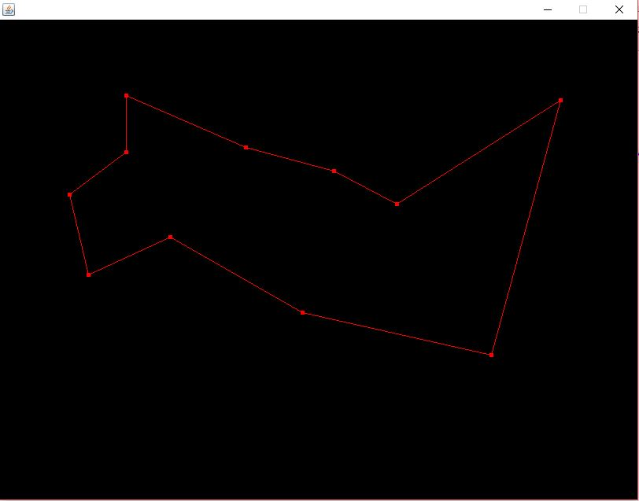
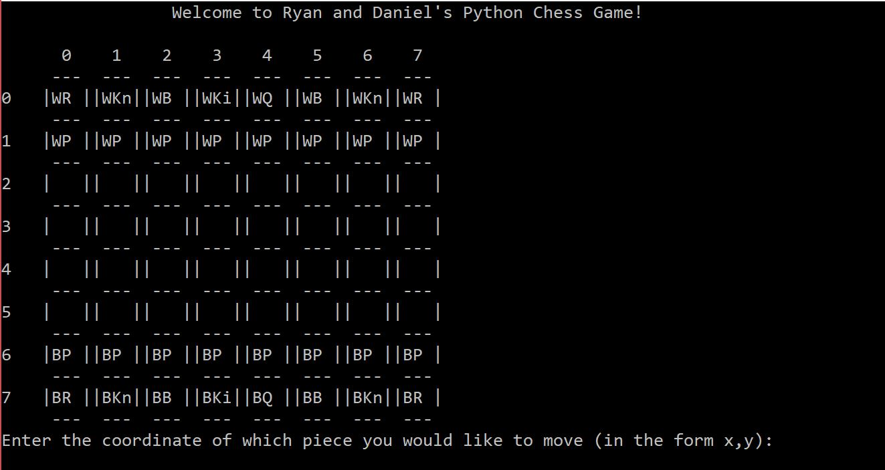
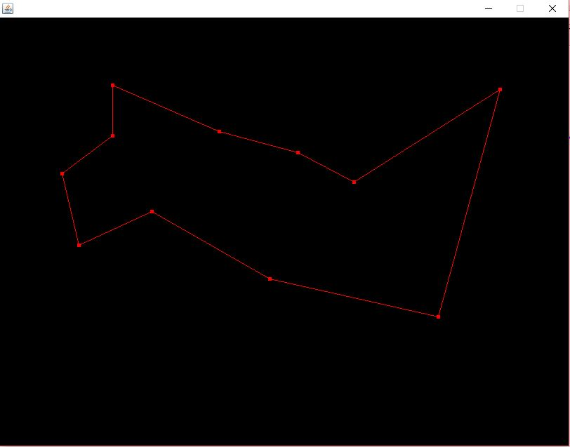
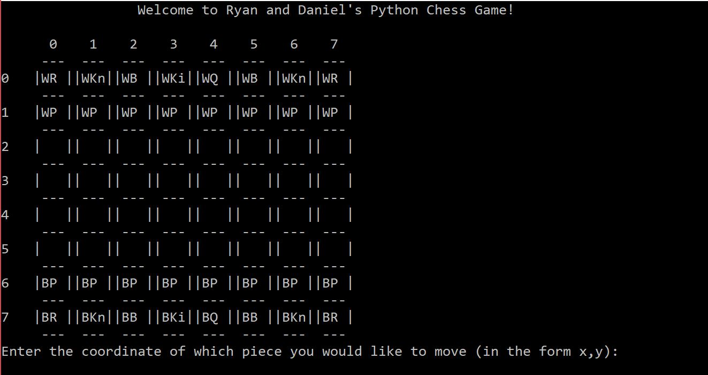

Projects
Projects Available in a GitHub Repository
Projects Available in a GitHub Repository
Traveling Salesman Problem
- Different algorithms are tested in solving the Traveling Salesman Problem. Algrorithms included are a Brute Force search, a special
case Breadth First and Depth First Search, a Greedy algorithm approach, and a Genetic/Wisdom of the Crowds approach. A description of the Traveling Salesman Problem can be found at its
Wikipedia page.

-
- Language: Java
Chess Game
- A Chess game created with a friend where two players can play eachother on the same computer

-
- Language: Python
Quadratic Assignment Problem
- A brute force and Genetic/Wisdom of the Crowds algorithms are used to solve a Quadratic Assignment Problem. Program
allows for user to create their own data sets and then solve them using the algorithm. A paper on the project is inlcluded
in the repository. A description of the Quadradic Assignment Problem can be found at its
Wikipedia page.
- Language: Java
Traveling Salesman Problem

Chess Game
